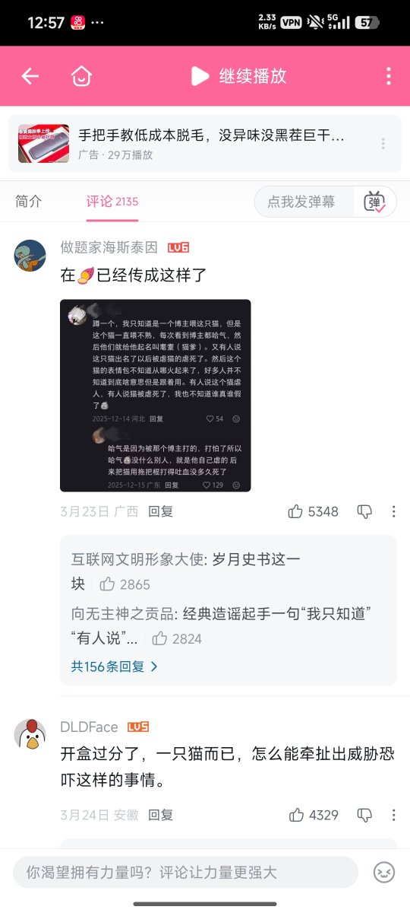
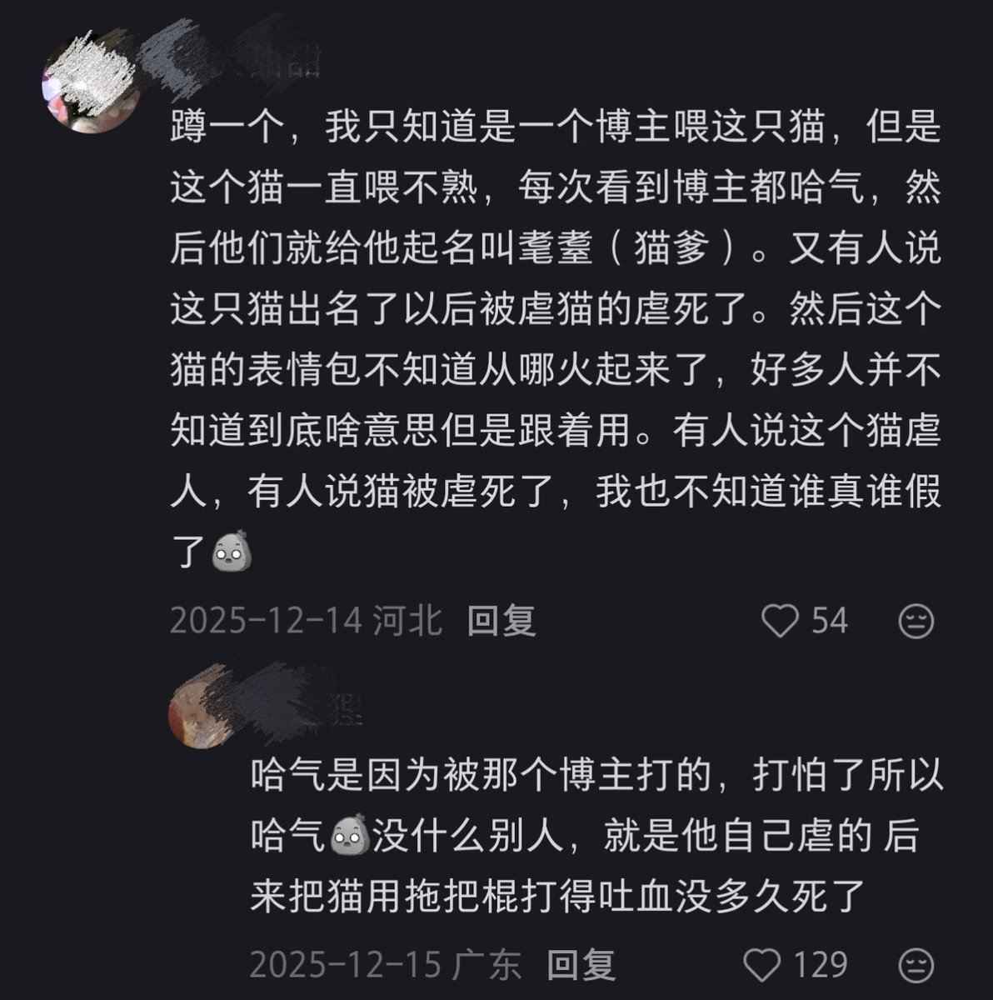
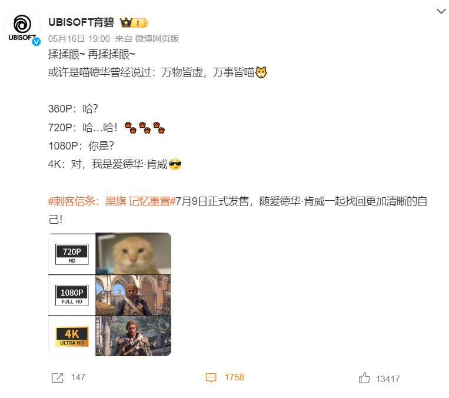

我在想这什么时候成为虐猫梗了？那段火爆全网的经典视频没有任何虐猫内容，“耄耋”的主人也只是一个喜欢养宠物的女孩子。我刚刚去看了一下，这个女生还因为这个事情被开盒被造谣被网暴，她养的猫还被虐猫人投毒致死。互联网真是太魔幻了，不，应该说互联网太包容了，什么人都能上网。
【圆头耄耋事件的背后：被投毒、被开盒、被网暴、被举报、被调查-哔哩哔哩】 https://t.co/foXzSFNsfk

【圆头耄耋事件的背后：被投毒、被开盒、被网暴、被举报、被调查-哔哩哔哩】 https://t.co/foXzSFNsfk



据传，近日育碧发了一条微博宣传游戏《刺客信条：黑旗 记忆重置》，因使用耄耋当配图，被某些群体炎上，指责是滥用“虐猫梗”。
本来只是玩抽象梗来宣传，结果评论区出现了一些“人”说育碧是玩虐猫梗，说只要用了耄耋的图，那就是就是用虐猫梗来宣传；还有人留言，表示官方玩烂梗就不买游戏了。 https://t.co/l90OglGKs0
本来只是玩抽象梗来宣传，结果评论区出现了一些“人”说育碧是玩虐猫梗，说只要用了耄耋的图，那就是就是用虐猫梗来宣传；还有人留言，表示官方玩烂梗就不买游戏了。 https://t.co/l90OglGKs0